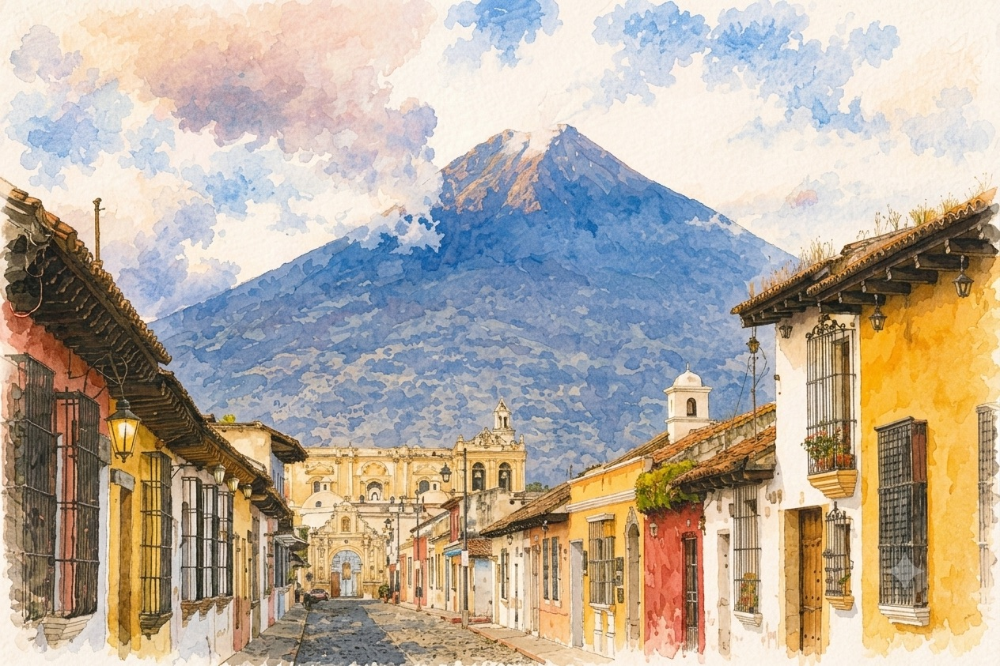
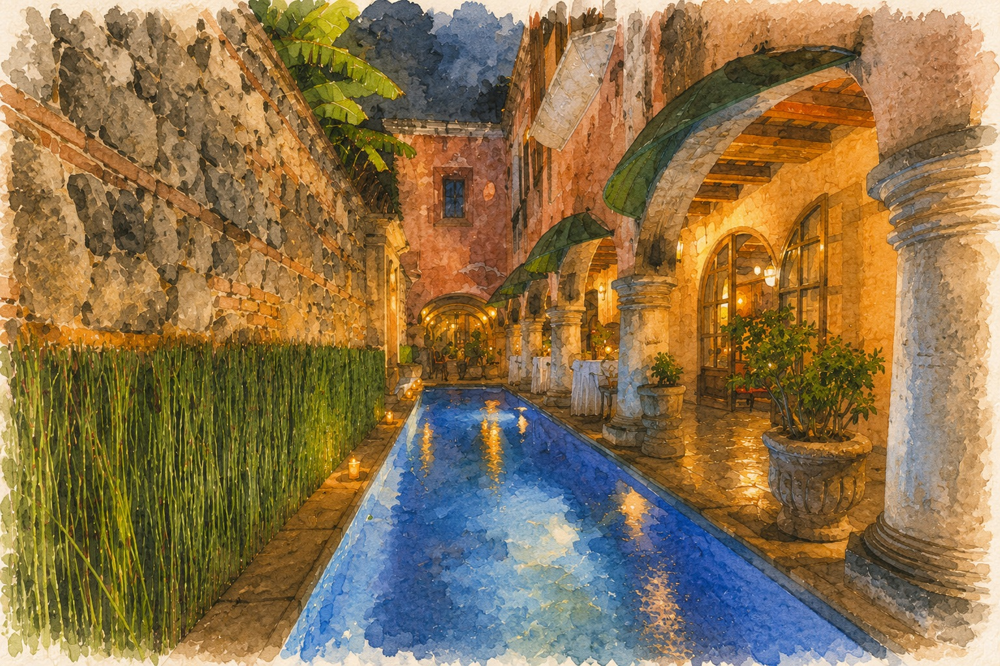
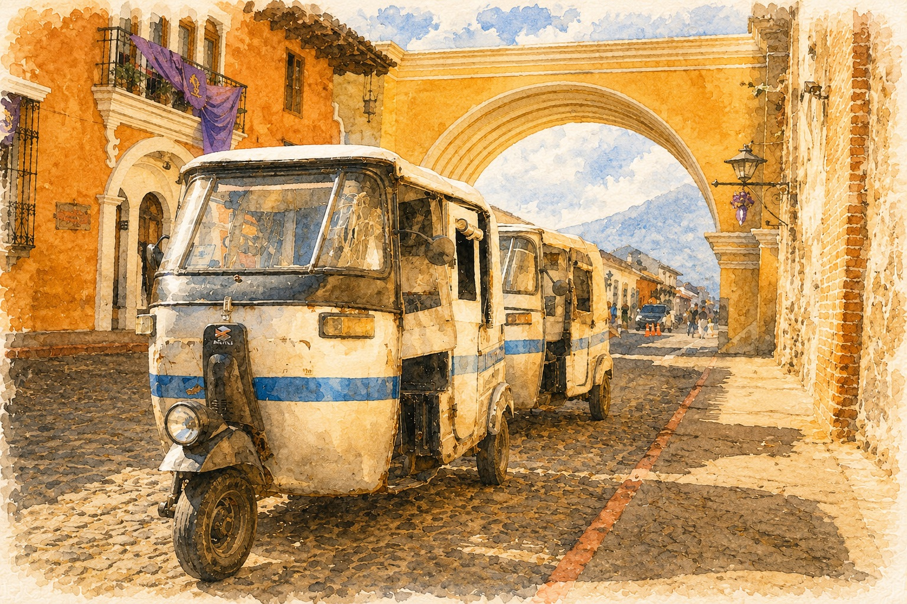

Travel & Stay
What you need to know to get to Antigua, where to stay, and how to get around for the wedding. For trip-planning extras like packing, money, and day trips, see our Guatemala Guide.
On This Page
Getting There

Flying In
Fly into Guatemala City (GUA). Antigua is about 1 hour away, longer in Guatemala City rush hour (7 to 9am, 5 to 7pm).
We recommend heading straight from the airport to Antigua rather than spending time in Guatemala City. Antigua is the better base either way, and if you'd like to see more of the country, it's the easiest place to arrange onward trips from.
Most visitors don't need a visa for Guatemala, but Bolivian citizens do, with one exception: if you hold a valid US, Canadian, Mexican, or Schengen visa, you're exempt and don't need a separate Guatemalan visa. If you don't hold one of those, start the process well before your trip through the nearest Guatemalan consulate. See requirements at MINEX.
Immigration & Customs
You'll fill out a short customs form on the plane or at a kiosk. After immigration, your bags are X-rayed at customs (random check). The whole process usually takes 30 to 45 minutes.
Airport to Antigua
Four options (prices below in USD; roughly Q7.7 to $1 as of writing):
- Pre-booked shuttle: easiest. ~$15–25 USD per person, shared van, drops you at your hotel. Atitrans and Antigua Tours are reliable. Book 24+ hours ahead.
- Uber: works at GUA. Expect ~$30–45 USD to Antigua. Confirm the driver before getting in.
- Private transfer: most hotels arrange these. ~$50–80 USD for a private car. Worth it if you're arriving late or with a lot of luggage.
- Taxis Amarillo (licensed yellow taxis): if you didn't pre-book, get one from the official taxi stand inside the airport, not from drivers waiting outside. Avoid unmarked taxis.
Where to Stay

-
5 min walk to Santa Clara
Good Hotel Antigua
$$Sleek Dutch-design hotel with a social-impact mission — the closest of the group to the ceremony.
-
7 min walk to Santa Clara
Porta Hotel Antigua
$$Classic colonial hotel with lush gardens, a pool, and a spa — an Antigua institution for over 60 years.
-
8 min walk to Santa Clara
Las Cruces Hotel Boutique
$$$Intimate 11-suite boutique in a restored colonial house, with volcano views from its veranda.
Website Map Email reservation@lascrucesboutiquehotel.com with your room choice, the completed authorization form, and passport/credit card copies -
8 min walk to Santa Clara
Mestizo Antigua
$$Six-room boutique in a 300-year-old house, one block from Parque Central.
-
10 min walk to Santa Clara
Mesón Panza Verde Where we're staying
$$$Art-filled boutique icon with one of Antigua's most celebrated restaurants.
-
10 min walk to Santa Clara
Hotel Casa Santo Domingo
$$$Landmark hotel and museum set in the ruins of a 16th-century monastery.
Map of Venues & Accommodations
Getting Around Antigua

Antigua is small, central Antigua is roughly 8 by 8 blocks, and almost everything you'll want is walkable. The streets are cobblestone, so wear shoes you can walk in.
When You Need a Ride
- Uber works in Antigua and is usually the easiest option. Cheap (~$2–4 USD across town).
- Tuk-tuks (three-wheeled motor taxis) are everywhere. Negotiate the price first, Q10–25 within central Antigua is fair.
- Taxis wait around Parque Central. Confirm the price before getting in.
Day Trips
For Pacaya, Acatenango, coffee fincas, and Lake Atitlán, book through your hotel or with operators like Old Town Outfitters or OX Expeditions. Shuttle services to Atitlán run multiple times a day (~$15 each way, 3 hours).
Planning to Explore More?
Our Guatemala Guide covers everything else: what to pack, money and tipping, food and water, safety, things to do in Antigua, and day trips and longer excursions beyond it.